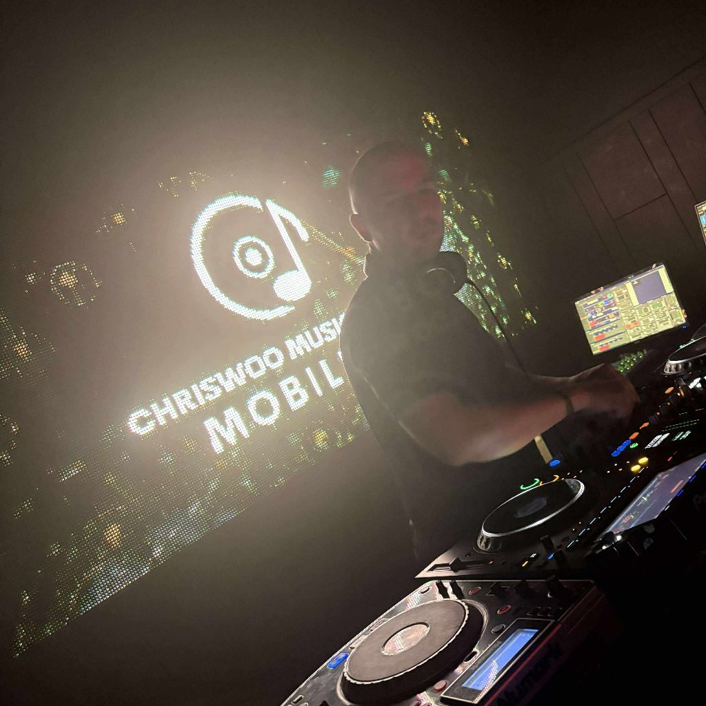
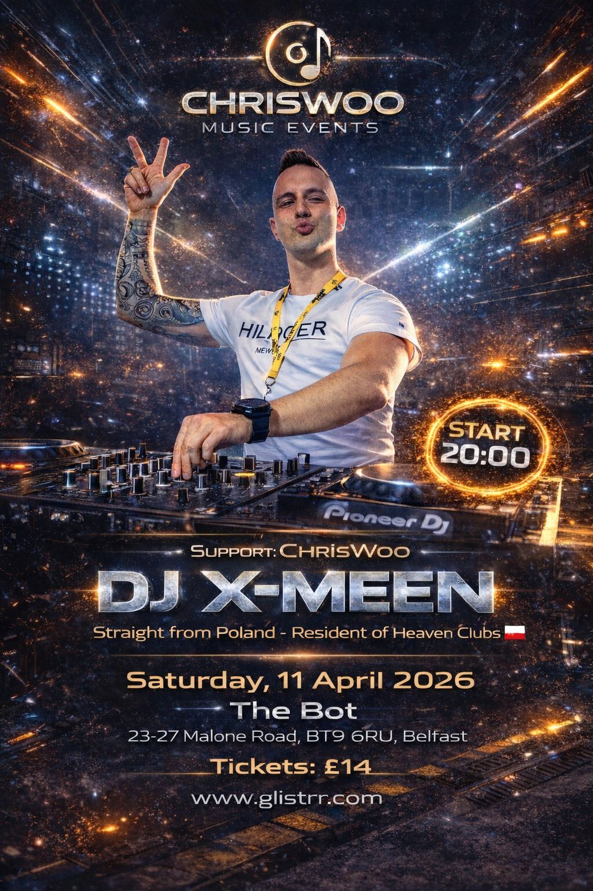
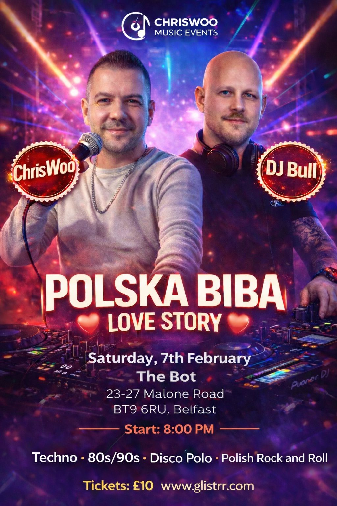
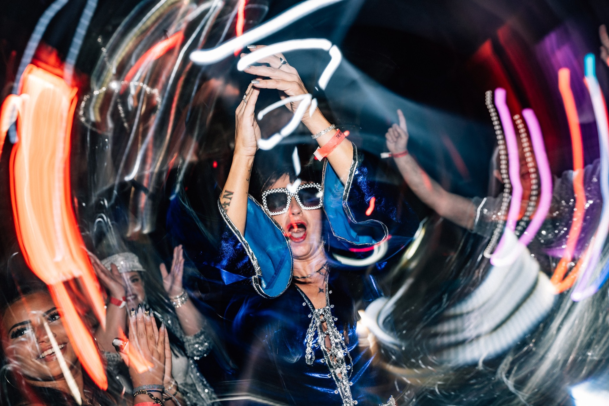
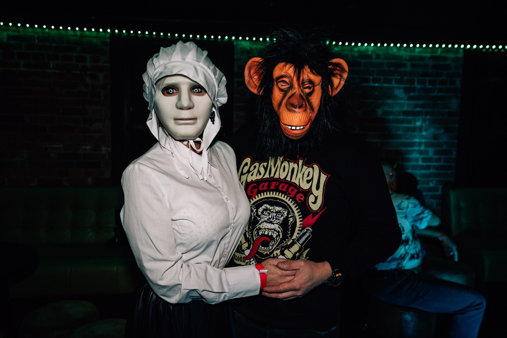

Helping an established DJ grow his brand and reach a wider audience

Chriswoo Music Events is a DJ and entertainment service run by Kris, who had already built a solid reputation within the local events scene. With an established customer base and regular bookings, the business was already performing well within the market.
However, Kris wanted to take the next step in growing the brand, reaching new audiences, and creating a stronger online presence to support future growth.
Our goal was to help Chriswoo Music Events strengthen its professional image and create a platform that could showcase previous events, highlight services, and make it easier for potential clients to get in contact.
With a growing reputation and a strong portfolio of events, the website helps present Kris’s work in a more professional way while supporting further expansion within the events and entertainment industry.
Today, Chriswoo Music Events continues to build its brand, performing at a range of events and growing its presence within the music and entertainment scene.



